Branding
Identidad visual, logotipos, colores y recursos gráficos.
BRANDING · MOTION GRAPHICS · MARKETING
Desarrollo de identidad visual, contenido para redes sociales, fotografía de producto y piezas audiovisuales para fortalecer la presencia digital de una marca del sector cosmético.

SOBRE EL PROYECTO
Visage Divine fue un proyecto integral de identidad visual y producción multimedia para una marca del sector cosmético. El proyecto comenzó con la construcción de la identidad de la marca, desarrollando sus logotipos, paleta de color, recursos gráficos y elementos necesarios para definir su lenguaje visual. A partir de esta identidad se desarrolló también una propuesta publicitaria audiovisual basada en modelado y producción 3D.
Identidad visual, logotipos, colores y recursos gráficos.
Modelado, texturizado, iluminación y render de escenarios y productos.
Producción y edición de un video promocional para la marca.
Blender, Premiere Pro, After Effects e Illustrator.
EL RETO
El proyecto no se limitó al desarrollo de una identidad gráfica. El reto consistió en llevar esa identidad a diferentes medios y construir una propuesta publicitaria completa alrededor de la marca. Esto implicó desarrollar el escenario principal de la publicidad, incluyendo la arquitectura exterior e interior de la tienda, además de modelar dos de los productos protagonistas: una pestañina y un iluminador. Cada uno de estos elementos fue trabajado desde el modelado hasta las texturas, materiales, iluminación, etiquetas y composición visual.
PROCESO CREATIVO
El desarrollo combinó diferentes disciplinas de producción multimedia. A partir de referencias, moodboards y la dirección visual definida para la marca, desarrollé la identidad gráfica y posteriormente trasladé sus elementos al entorno tridimensional. En Blender realicé el modelado del escenario principal, tanto exterior como interior, junto con el modelado de dos productos. También desarrollé sus materiales, texturas, iluminación y elementos gráficos, incluyendo las etiquetas y aplicaciones de identidad. Finalmente realicé los renders y la producción audiovisual del video promocional. La edición completa se desarrolló en Premiere Pro y After Effects, incluyendo montaje, composición, sonido y tratamiento final.
GALERÍA


GALERÍA
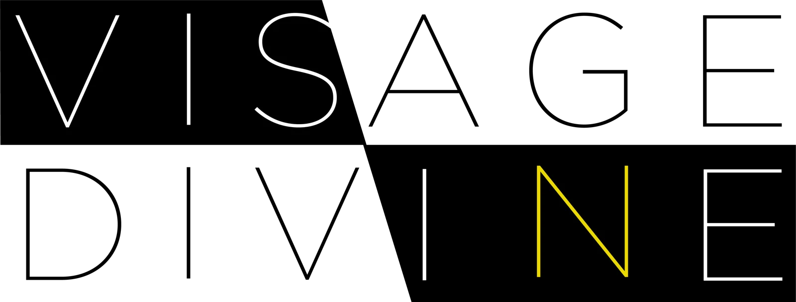
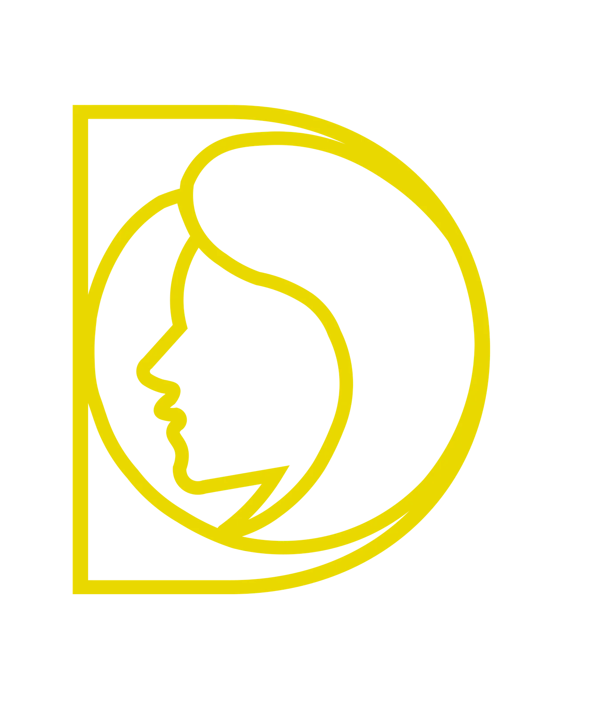
GALERÍA
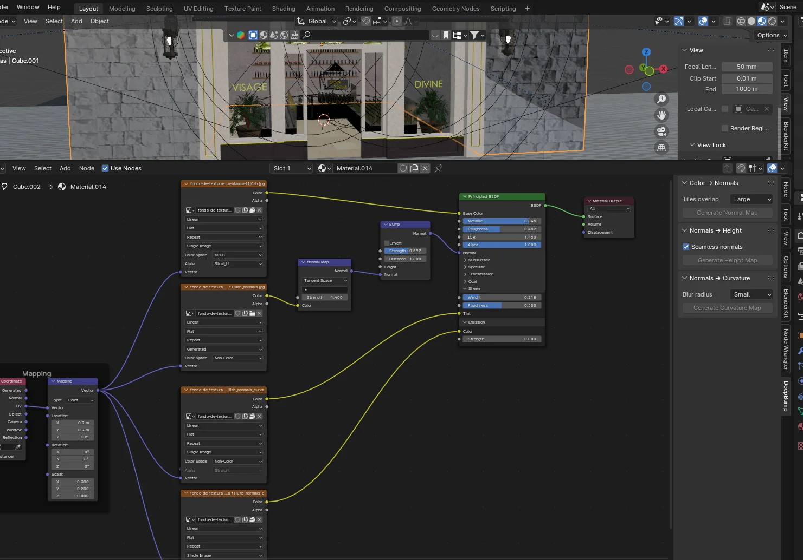
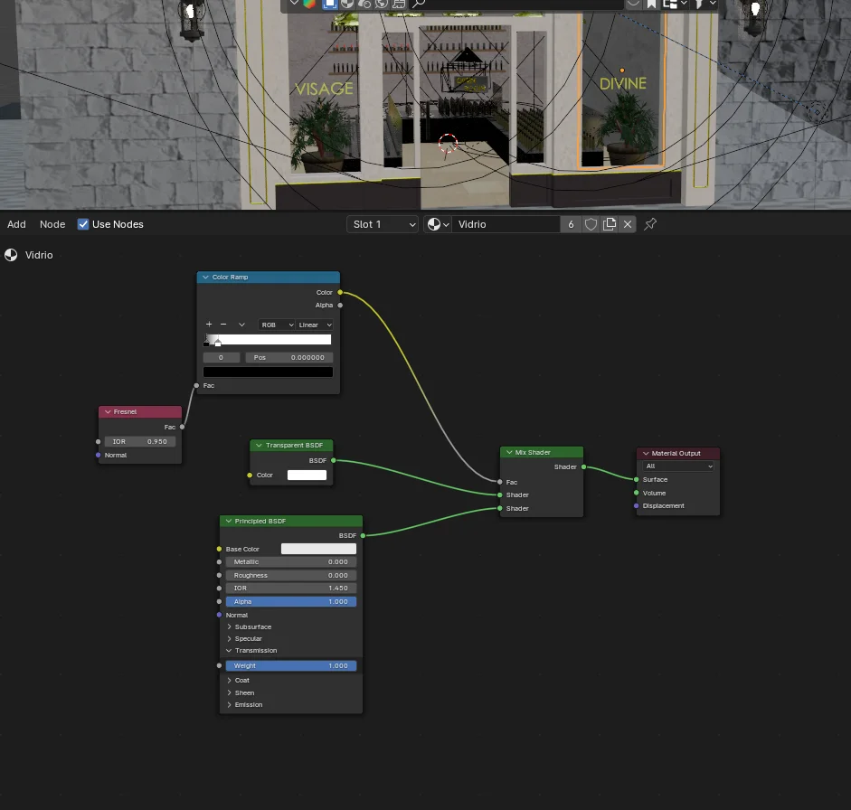
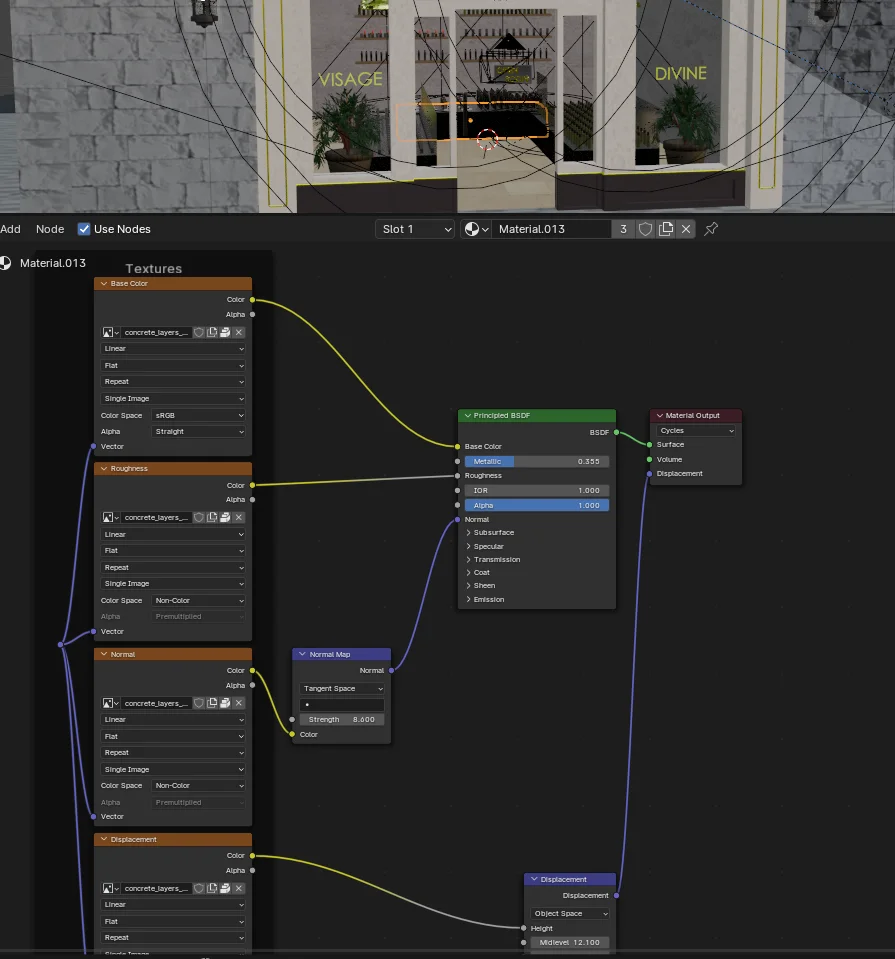
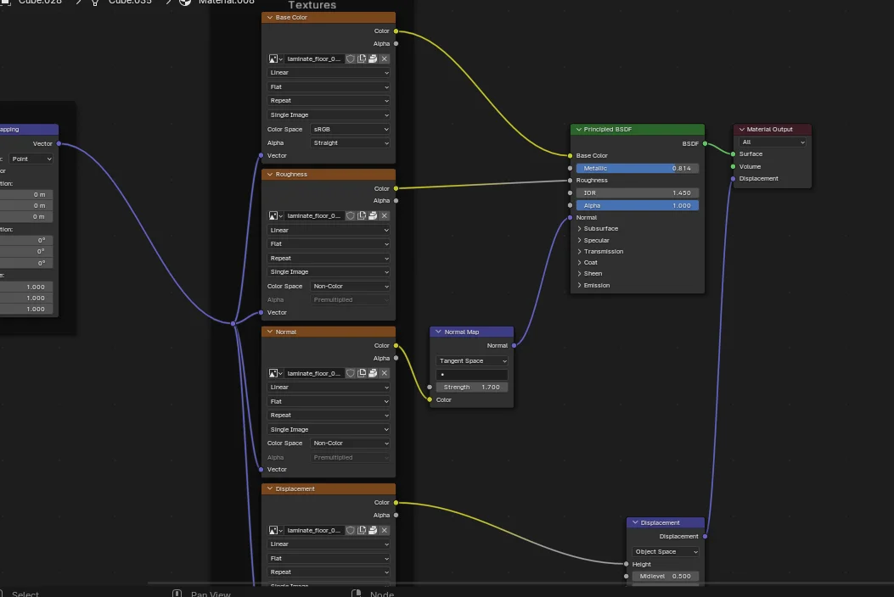
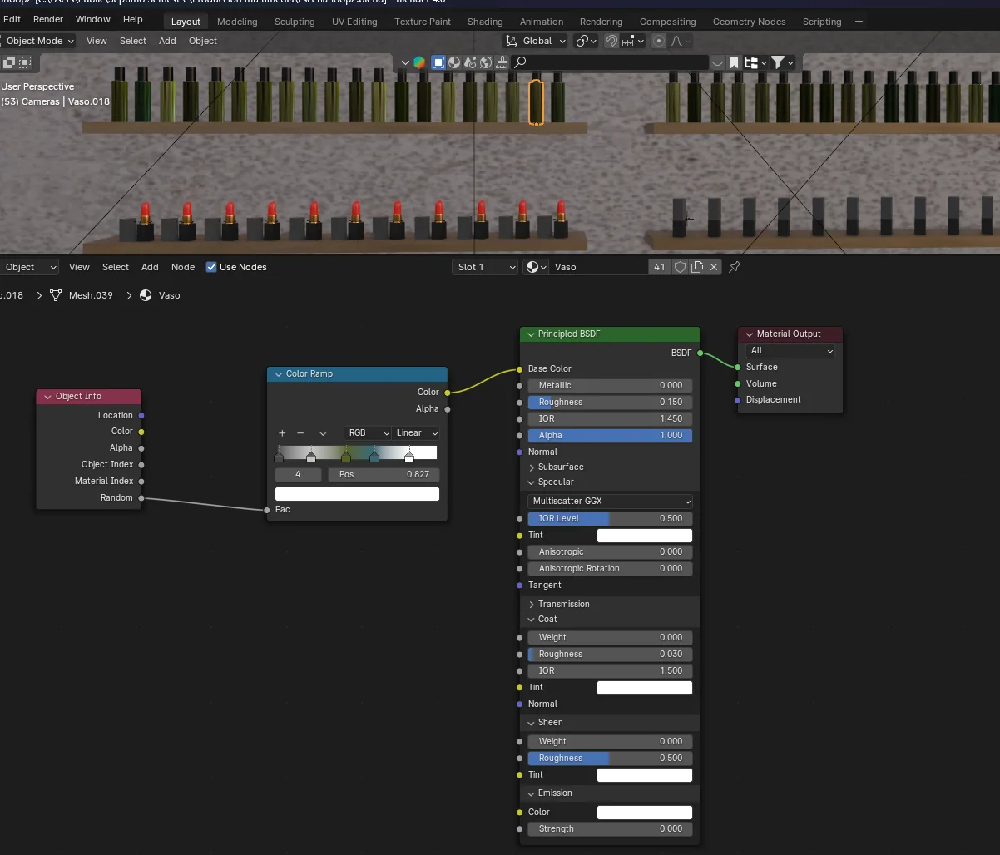
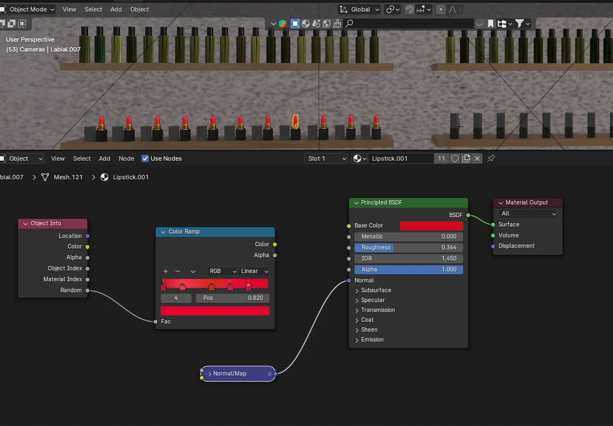
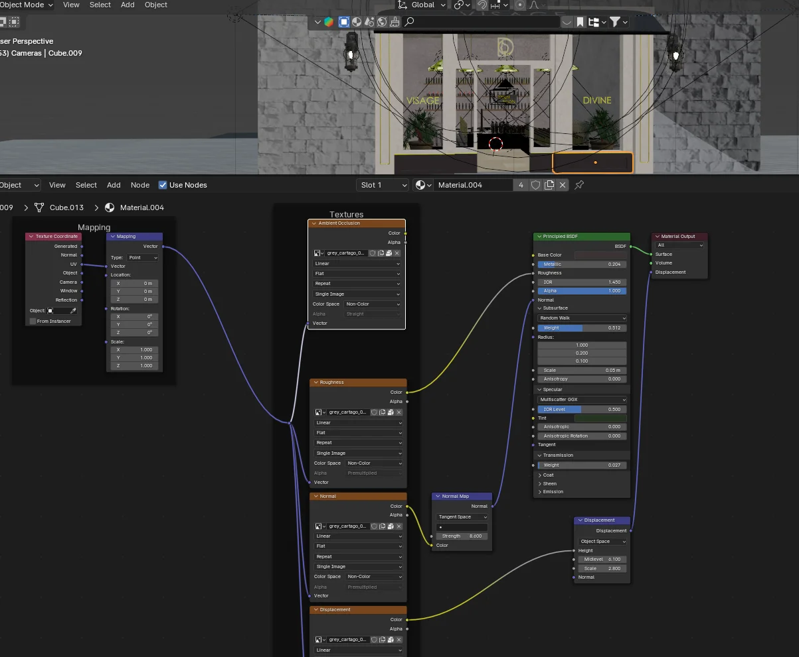
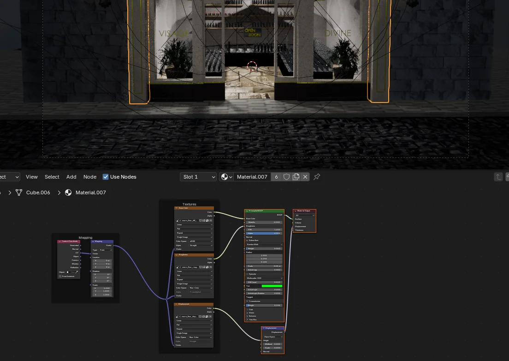
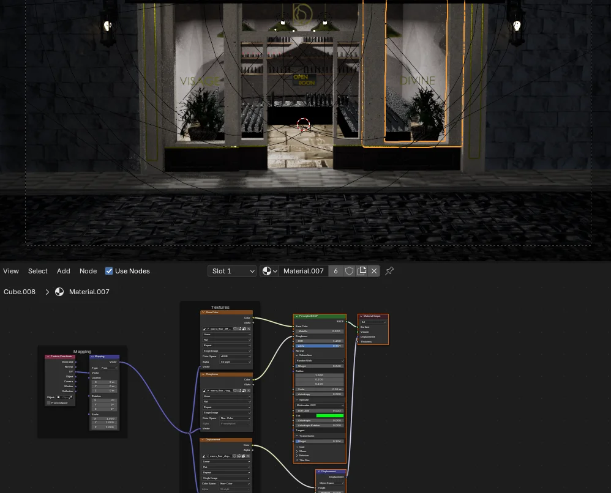
AUDIOVISUAL
RESULTADOS
El proyecto reúne identidad gráfica, modelado de escenario y productos, materiales, iluminación y producción audiovisual en una propuesta coherente para Visage Divine.